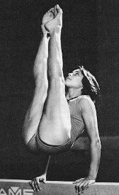

Leslie Russo (USA)
1977 Blume Memorial AA Silver Medalist

Leslie was born on November 17, 1964.
Competition Results
1976
USGF Jr. Nationals: 34th AA
1977
Blume Memorial: 2nd AA
Chunichi Cup: 10th AA
1st Elite Nationals: 9th AA
Liberty Cup: 1st AA, 1st UB, 2nd FX, 2nd B, 2nd V
Sanlam Cup: 5th AA
USA Championships: 10th AA, 2nd UB
1978
World Trials: 18th AA
1979
Antibes International: 4th AA, 2nd FX, 4th V
Dial Selection Meet: 29th AA
1st Elite Nationals: 2nd AA, 1st FX, 2nd UB
National Sports Festival: 14th AA, 2nd B
Orleans International: 3rd UB
US Championships: 9th AA
US World Trials: 5th AA
World Championships: 6th Team
This page was created on September
02, 2006 and was last updated on February 02, 2014.
© Gymn Forum